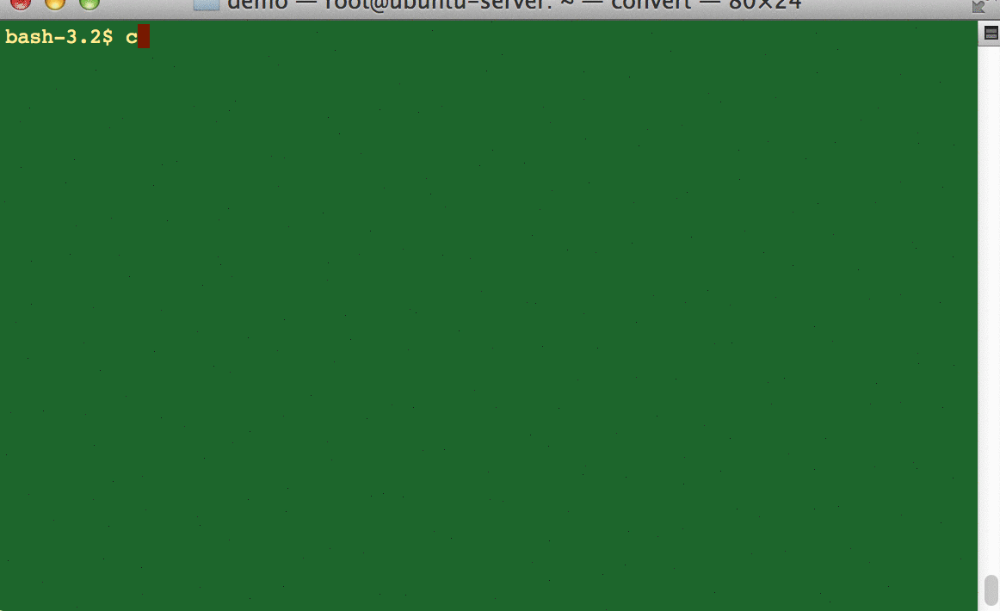

git-quick-start
这是一个git的快速入门项目，使用一些gif图片来播放一些基础的git命令使用方法。
生成ssh-key
这里是使用ssh-keygen的默认配置生成了秘钥对，没有给私钥加密码，非常的简单，也很实用，注意私钥（~/.ssh/id_rsa）请谨慎保存，泄露了就如同泄露了密码一样

Clone and push
没什么好说的，就是clone下来，编辑一些文件，提交然后push。
创建和切换分支
创建分支*git branch new_branch_name* 切换分支 git checkout target_branch_name ，哦忘了，删除分支是*git branch -D target_branch_name*
推送远程分支
推送远程分支很简单，*git push origin local_branch_name:remote_branch_name*

merge
merge用于合并分支，*git merge source_branch* 
tag
可使用git子命令tag来给版本打标签做标记，*git tag xxx*